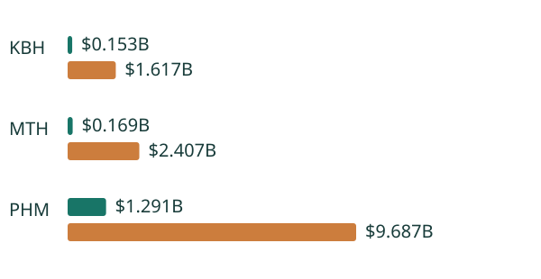

Research prototype · decision adoption withheldDecision in one minute
74 contract-scope/date records reconcile $1.613B of mixed-basis disclosed capital at risk and $13.711B of conditional remaining purchase prices.
Use the contract register to separate funded exposure from optional future outlays. Request tract-level values, refund rights and minimum-take schedules before authorizing exercise or extensions.

Green: disclosed at-risk cost (mixed definitions). Orange: conditional remaining purchase price (not debt).
Observed evidence, before scenarios
Where the conclusion stops
The 243 option scenarios and 27 refund sensitivities use assumed parcel values, probabilities, discounts, extension costs and refundability. They are not estimated option values. The empirical decision is to retain a contract register with reconciled boundaries and seek deal-level diligence, not to acquire or abandon the aggregate portfolios. PHM deposits include pre-acquisition costs, MTH reports cash deposits, and KBH separately reports pre-acquisition costs. Fiscal observation dates differ. Meritage's legacy committed subtotal includes balance-sheet contracts in 2021; summing the three off-balance-sheet committed categories resolves the scope difference. Its 2026 reused tag does not prove refundability.
Information cutoff: filings through 21 October 2026; latest observations are explicitly dated. Public numerical facts and original source links are pinned. Adoption gate remains false because decision-critical contractual/forward inputs are absent. No causal claim or professional tenure is implied.
Audit trail
Read panel.csv, source_lineage.csv, source_manifest.json, methodology and the excluded observations before applying a result. Main software checks and browser evidence are recorded separately from the failed real-world adoption gate.
Open the local analyst workflow